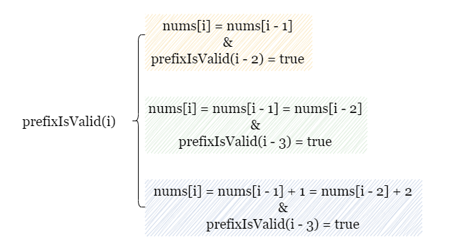
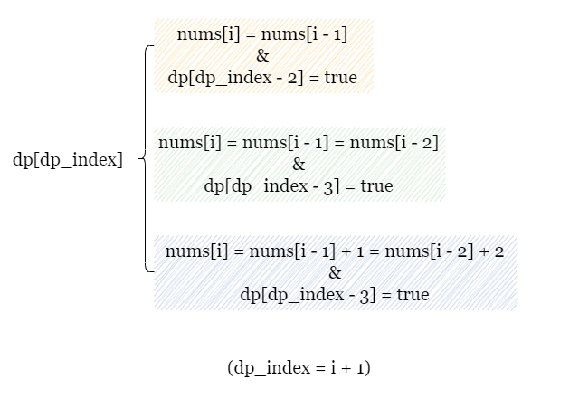

As shown in the diagram below, for the given nums, we have two different partitioning methods that
satisfy one of the three conditions required by the problem.
This raises the question; when there are multiple options, which one should we choose? Each decision will affect future decisions. When we have a problem with this characteristic, we should consider using dynamic programming.
If you are not familiar with dynamic programming, please refer to our explore cards Dynamic Programming Explore Card. We will focus on the usage in this article and not the underlying principles or implementation details.
The recursive dynamic programming approach can be used to solve this problem. Here, the idea is to create a recursive
function prefixIsValid(i) which checks whether a valid partition exists for the prefix subarray nums[0
~ i]. Therefore, for nums of length n, prefixIsValid(n - 1)
represents whether there is a valid partition for the whole array.
To determine prefixIsValid(i) at every index i, we have three possibilities plus one base
case to check:
i < 0, then prefixIsValid(i) is true, since it denotes an empty
subarray that always has a valid partition.
nums[i] and nums[i - 1] form a subarray of two equal elements.
In this case, if prefixIsValid(i - 2) is true, it indicates that prefixIsValid(i) is
also true. Since the valid partition for nums[0 ~ i - 2] can be appended by the subarray [nums[i
- 1], nums[i]] to form a valid partition for nums[0 ~ i].
nums[i], nums[i - 1], and nums[i - 2] form a
subarray of three equal elements. In this case, if prefixIsValid(i - 3) is true, it indicates that
prefixIsValid(i) is also true. Since the valid partition for nums[0 ~ i - 3] can be
appended by the subarray [nums[i - 2], nums[i - 1], nums[i]] to form a valid partition for nums[0
~ i].
nums[i], nums[i - 1], and nums[i - 2] form a
subarray of three consecutive increasing elements. In this case, if prefixIsValid(i - 3) is true,
it indicates that prefixIsValid(i) is also true. Since the valid partition for nums[0 ~ i -
3] can be appended by the subarray [nums[i - 2], nums[i - 1], nums[i]] to form a valid
partition for nums[0 ~ i].
In summary, if any of the following conditions is true, we can conclude that prefixIsValid(i) is true:

To optimize the time complexity, we can make use of memoization (caching previously calculated results) to avoid recomputing the same values multiple times. For instance, if we already know that a valid partition exists starting from the index
i, we can save it in a hash mapmemoasmemo[i] = true, therefore, we don't need to check it again the next time we encounter the same index.
Initialize a hash map memo, and set memo[-1] = true since an empty array always has
a valid partition.
Define a function prefixIsValid(i) as whether the prefix subarray nums[0 ~ i] has a
valid partition.
i is stored in memo, return memo[i].ans = false.i > 0 and nums[i] = nums[i - 1], we update ans as ans
|= prefixIsValid(i - 2).
i > 1 and nums[i] = nums[i - 1] = nums[i - 2], update ans |=
prefixIsValid(i - 3).
i > 1 and nums[i] = nums[i - 1] + 1 = nums[i - 2] + 2, update ans
|= prefixIsValid(i - 3).
memo[i] = ans and return ans.Return prefixIsValid(n - 1).
Java
class Solution {
Map memo = new HashMap<>();
// Determine if the prefix array nums[0 ~ i] has a valid partition
boolean prefixIsValid(int[] nums, int i) {
if (memo.containsKey(i)) {
return memo.get(i);
}
boolean ans = false;
// Check 3 possibilities
if (i > 0 && nums[i] == nums[i - 1]) {
ans |= prefixIsValid(nums, i - 2);
}
if (i > 1 && nums[i] == nums[i - 1] && nums[i - 1] == nums[i - 2]) {
ans |= prefixIsValid(nums, i - 3);
}
if (i > 1 && nums[i] == nums[i - 1] + 1 && nums[i - 1] == nums[i - 2] + 1) {
ans |= prefixIsValid(nums, i - 3);
}
memo.put(i, ans);
return ans;
}
public boolean validPartition(int[] nums) {
int n = nums.length;
memo.put(-1, true);
return prefixIsValid(nums, n - 1);
}
}
Python3
class Solution:
def validPartition(self, nums: List[int]) -> bool:
n = len(nums)
memo = {-1: True}
# Determine if the prefix array nums[0 ~ i] has a valid partition
def prefixIsValid(i):
if i in memo:
return memo[i]
ans = False
# Check 3 possibilities
if i > 0 and nums[i] == nums[i - 1]:
ans |= prefixIsValid(i - 2)
if i > 1 and nums[i] == nums[i - 1] == nums[i - 2]:
ans |= prefixIsValid(i - 3)
if i > 1 and nums[i] == nums[i - 1] + 1 == nums[i - 2] + 2:
ans |= prefixIsValid(i - 3)
memo[i] = ans
return ans
return prefixIsValid(n - 1)
Let nn
be the size of nums
Time complexity: O(n)O(n)
prefixIsValid(i) recursively calls itself to determine the existence of a valid partition
for the current subarray nums[0 ~ i]. Due to memoization, we only calculate each value of
i once. There are O(n)O(n)
states and calculating each one involves making no more than 3 calls, which is O(1)O(1) per call.
Space complexity: O(n)O(n)
memo stores at most n pairs, which also takes O(n)O(n) space.
The iterative dynamic programming (DP) approach involves tabulation, where we create a DP table to keep track of the validity of partitions for every index in the array. Instead of starting from the end and recursively breaking the problem into subproblems toward the beginning, this approach starts from the beginning of the array and moves toward the end.
We will initialize an array dp of size n + 1 with false (indicating no valid
partition is found yet). Here, dp[i] represents if the prefix of length i can form a valid
partition. Note that dp[i] = prefixIsValid(i - 1) from the previous approach. We set dp[0] =
true since it represents a valid partition for an empty array.
Considering this base case dp[0] = true, for the same prefix array, dp and
nums have different indices, specifically dp_index = i + 1. Hence,
dp[dp_index] denotes whether there is a valid partition for the prefix array nums[0 ~ i].
We will iterate over nums and update dp as we go along.
We check the same three possibilities at each index i as in the recursive approach. If any of the
conditions is true, it represents the existence of a valid partition, and we update dp[dp_index] as
true.

In the end, we check the last index of dp. If dp[n] is true, it means we can form a valid
partition of the whole array, we return true. Otherwise, we return false.
Create an array dp of length n + 1, initialized with all false values.
Set dp[0] = true.
Iterate over nums, for each index i:
dp as dp_index = i + 1.i > 0 and nums[i] = nums[i - 1], we update dp[dp_index] as
dp[dp_index] |= dp[dp_index - 2].
i > 1 and nums[i] = nums[i - 1] = nums[i - 2], update dp[dp_index]
|= dp[dp_index - 3].
i > 1 and nums[i] = nums[i - 1] + 1 = nums[i - 2] + 2, update dp[dp_index]
|= dp[dp_index - 3].
Return dp[n] once the iteration is complete.
Java
class Solution {
public boolean validPartition(int[] nums) {
int n = nums.length;
boolean[] dp = new boolean[n + 1];
dp[0] = true;
// Determine if the prefix array nums[0 ~ i] has a valid partition
for (int i = 0; i < n; i++) {
int dpIndex = i + 1;
// Check 3 possibilities
if (i > 0 && nums[i] == nums[i - 1]) {
dp[dpIndex] |= dp[dpIndex - 2];
}
if (i > 1 && nums[i] == nums[i - 1] && nums[i] == nums[i - 2]) {
dp[dpIndex] |= dp[dpIndex - 3];
}
if (i > 1 && nums[i] == nums[i - 1] + 1 && nums[i] == nums[i - 2] + 2) {
dp[dpIndex] |= dp[dpIndex - 3];
}
}
return dp[n];
}
}
Python3
class Solution:
def validPartition(self, nums: List[int]) -> bool:
n = len(nums)
dp = [True] + [False] * n
# Determine if the prefix array nums[0 ~ i] has a valid partition
for i in range(n):
dp_index = i + 1
# Check 3 possibilities
if i > 0 and nums[i] == nums[i - 1]:
dp[dp_index] |= dp[dp_index - 2]
if i > 1 and nums[i] == nums[i - 1] == nums[i - 2]:
dp[dp_index] |= dp[dp_index - 3]
if i > 1 and nums[i] == nums[i - 1] + 1 == nums[i - 2] + 2:
dp[dp_index] |= dp[dp_index - 3]
return dp[n]
Let nn
be the size of nums.
Time complexity: O(n)O(n)
We iterate over nums and fill dp which consists of O(n)O(n)
iterations.
At each index i, we check 3 possibilities, which can be done in costant time.
Space complexity: O(n)O(n)
dp has a length of n + 1.In the previous approach, we build a table dp of size n + 1. Here we try to optimize the
space requirement of this iterative approach. Note that we don't need to keep all elements in the original
dp. Whether the current subarray has a valid partition only depends on the last three elements in
dp, hence, it is safe to keep track of only the last three elements in dp.
How do we continuously update the stored values using an array of length 3? We use a method called the "rolling
index", as shown in the picture below. Let's assume that long_dp is the long table we used in the
previous approach, and dp is the short array of length 3 for this approach.
The first three indices can be directly saved in dp.
Upon reaching dp_index = 3, we obtain the value of long_dp[dp_index]. Recall that
we only need the most recent three indices. Therefore, we can directly use dp[0] to store
long_dp[3]. Although the original value dp[0] = long_dp[0] is overwritten, it does
not affect the calculation because we no longer need that value in the following iterations.
Upon reaching dp_index = 4, similarly, we use dp[1] to store
long_dp[4].
Upon reaching dp_index = 5, we use dp[2] to store long_dp[5].
We can use the modulo operation on dp_index with 3 to map each element long_dp[dp_index]
to dp[dp_index % 3].
In the end, we check the last element long_dp[n], which is dp[n % 3] in our case. If dp[n
% 3] is true, it means we can form a valid partition of the whole array, we return true.
Otherwise, we return false.
Create an array dp of length 3, initialized with all false values. Set
dp[0] = true.
Iterate over nums, for each index i:
dp as dp_index = i + 1.i > 0 and nums[i] = nums[i - 1], we update dp[dp_index % 3] |=
dp[(dp_index - 2) % 3].
i > 1 and nums[i] = nums[i - 1] = nums[i - 2], update dp[dp_index
% 3] |= dp[(dp_index - 3) % 3].
i > 1 and nums[i] = nums[i - 1] + 1 = nums[i - 2] + 2, update dp[dp_index
% 3] |= dp[(dp_index - 3) % 3].
Return dp[n % 3] once the iteration is complete.
Java
class Solution {
public boolean validPartition(int[] nums) {
int n = nums.length;
boolean[] dp = new boolean[3];
dp[0] = true;
// Determine if prefix array nums[0 ~ i] has a valid partition
for (int i = 0; i < n; i++) {
int dpIndex = i + 1;
boolean ans = false;
// Check 3 possibilities
if (i > 0 && nums[i] == nums[i - 1]) {
ans |= dp[(dpIndex - 2) % 3];
}
if (i > 1 && nums[i] == nums[i - 1] && nums[i] == nums[i - 2]) {
ans |= dp[(dpIndex - 3) % 3];
}
if (i > 1 && nums[i] == nums[i - 1] + 1 && nums[i] == nums[i - 2] + 2) {
ans |= dp[(dpIndex - 3) % 3];
}
dp[dpIndex % 3] = ans;
}
return dp[n % 3];
}
}
Python3
class Solution:
def validPartition(self, nums: List[int]) -> bool:
n = len(nums)
# Only record the most recent 3 indices
dp = [True] + [False] * 2
# Determine if the prefix array nums[0 ~ i] has a valid partition
for i in range(n):
dp_index = i + 1
ans = False
if i > 0 and nums[i] == nums[i - 1]:
ans |= dp[(dp_index - 2) % 3]
if i > 1 and nums[i] == nums[i - 1] == nums[i - 2]:
ans |= dp[(dp_index - 3) % 3]
if i > 1 and nums[i] == nums[i - 1] + 1 == nums[i - 2] + 2:
ans |= dp[(dp_index - 3) % 3]
dp[dp_index % 3] = ans
return dp[n % 3]
Let nn
be the size of nums.
Time complexity: O(n)O(n)
We iterate over nums and fill dp, requiring a total of O(n)O(n)
iterations.
At each index i, we check 3 possibilities, which takes O(1)O(1) time.
Space complexity: O(1)O(1)
dp has a length of 3 and only takes constant space.